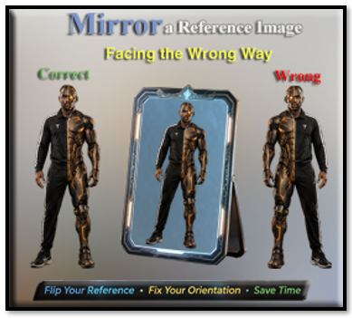
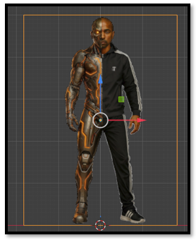
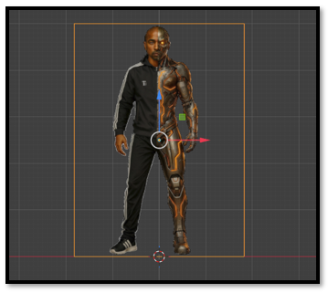

~4 Mirror a Reference Image Facing the Wrong Way ~
9/28/2026

Let’s say that the reference image came in like this. Wow, that’s not right. The robot half is supposed to be on Awedae’s left side, not his right side.
- Select the reference image.

- Object → Mirror
- Choose X Global (or whichever axis you need).

Short Cut Keys
Or, depending on the situation:
- Ctrl + M, then X
- Ctrl + M, then Y
depending on which direction you want to mirror.
There are also cases where using S, then X, then -1 produces the same visual result, but that also affects the object's scale, so I generally prefer the actual Mirror command when possible.